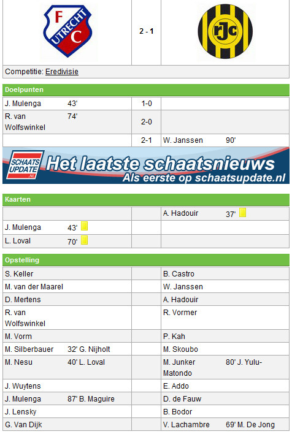

Een goal van de Zambiaan Mulenga vlak voor rust, bleek de aanzet tot een 2-1
thuiszege op Roda JC. Van Wolfswinkel zorgde een kwartier voor tijd voor de
andere thuistreffer. De treffer van Janssen kon de zege van de thuisclub
niet meer voorkomen.
Roda JC was zeker niet naar Utrecht gekomen om verdedigend een puntje uit de
strijd proberen te slepen. De ploeg van trainer Van Veldhoven zocht vanaf de
aftrap het doel van Vorm. FC Utrecht reageerde apathisch op het aanvallende
strijdplan van de Limburgers. Al na zes minuten had Skoubo de gasten
op voorsprong kunnen brengen, maar de van FC Utrecht gehuurde spits schoot
tegen Vorm aan.
Na een klein kwartier kwam FC Utrecht pas voor het eerst door de goed
gegroepeerde linies van de gasten, maar Van Wolfswinkel had te veel tijd
nodig na een uitstekende pass van Silbauer. Enkele minuten later bood
Mertens na een uitstekende actie waarbij hij vier spelers van Roda
uitspeelde, Mulenga zijn eerste kans. De van de Franse tweedeklasser
Chateauroux overgekomen aanvaller schoot in kansrijke positie naast.
Nadat Boldiszar Bodor na iets meer dan een half uur wedstrijd naast schoot,
kreeg Mulenga opnieuw een grote kans de thuisploeg op voorsprong te brengen.
Na een fout van Eric Addo kon hij alleen op Bram Castro af, maar de
Belgische keeper reageerde attent. Acht minuten later was het wel raak.
Nadat Van Wolfswinkel tegen Castro opschoot, schoof Lensky de bal in de
voeten van Mulenga. Ditmaal faalde hij niet, 1-0.
Trainer Du Chatinier moest na blessures van Silberbauer en Nesu (schop
Hadouir) voor rust al twee keer wisselen. De wissels zorgden evenwel voor
meer rust in het elftal dat na rust voetballend op zoek ging naar meer
treffers. De beloning kwam ruim een kwartier voor tijd. Van Wolfswinkel
schoot op aangeven van Mertens eerst tegen de paal, maar was in de rebound
wel trefzeker, 2-0. Na een foutje van Sander Keller kon Willem Janssen in
blessuretijd nog tegen scoren, 2-1.
